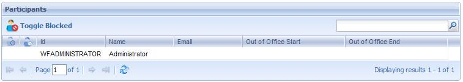
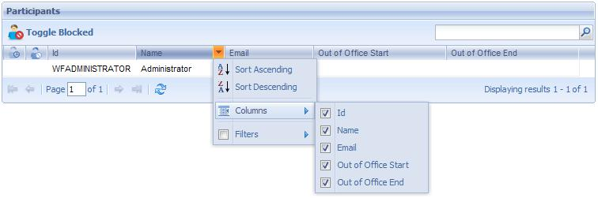

Through this application, the process administrator user can monitor the different users participating in the workflow system processes. The following figure shows the Participants application interface:

Button ToolbarToogle Blocked: it allows locking and unlocking the selected participants. Locked users will not be able to log into the systemParticipants Grid Out of Office: Indicates that the user is out of office. Blocked: Indicates the the user is blocked.
|
| Backlinks | |
| HowTo: Using GXflow Entry Point User Control | Process Manager |